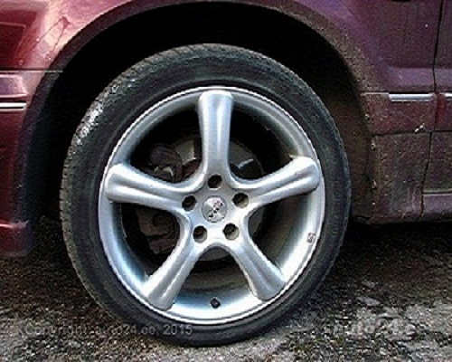
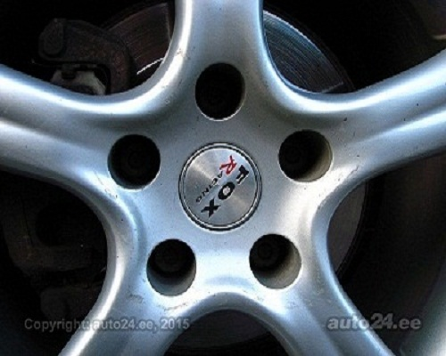
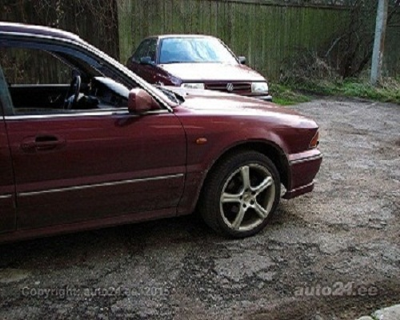
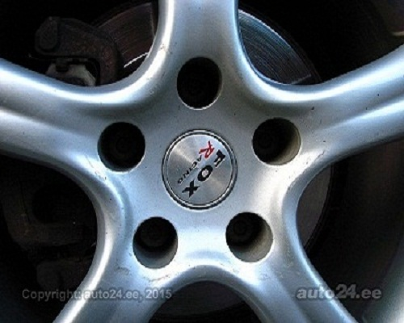
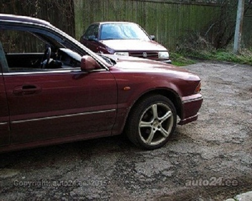
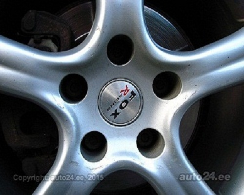
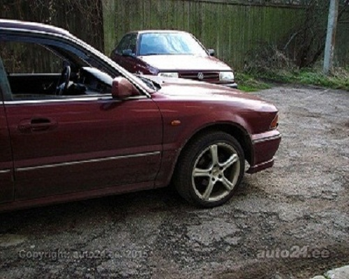

VitaLina+

 





Fox Michelin R17 4 шт.
Цена 40 EUR / шт 160 EUR / комплект Цена со скидкой 38 EUR / шт 152 EUR / комплект
Подходит автомобилям
Тип: легковой автомобиль
Технические данные
Показатели диска
Изготовитель Fox Размер (дюйм) 17 литые дискиПоказатели резины
Изготовитель Michelin Размер 225 / 45 Диаметр 17 летняя резина Глубина протектора 2-3 mmДругая информация
Продаются диски для Митсубиши. На Сигму точно подходят. На трёх из дисков стоит резина 225/45 R17. с остатком 2-3мм Информация на обратной стороне ET35 / FOX 1 EVO 8J x 17H2 Диаметр центрального отверстия 67,1мм.